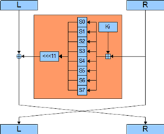
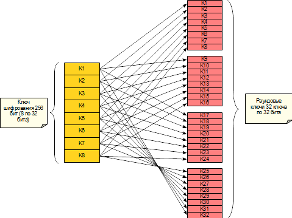
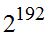

В России установлен единый стандарт криптографического преобразования для информационных систем − блочный шифр ГОСТ 28147−89, введенный в применение в 1989 году. Считается, что разработан он был существенно ранее, и до времени принятия в качестве стандарта несколько лет проходил тестирование. Его применение является обязательным для государственных учреждений, организаций, предприятий, банков и других учреждений, чья деятельность связана с обеспечением информационной безопасности государства (в том числе и для структур министерства обороны РФ). Для прочих организаций и частных лиц его применение носит рекомендательный характер. Блочный шифр ГОСТ 28147-89 является алгоритмом похожим на DES, но спроектированным с учетом опыта применения DES, имеет следующие характеристики:
− структура − классическая сеть Фейстеля;
− размер ключа 256 бит;
− размер блока 64 бита;
− количество раундов − 32.
Структура раундовой функции представлена на рис. 3.15.

Рис. 3.15. Структура раундовой функции блочного шифра ГОСТ 28147−89
Особенностью этого шифра является использование операции сложения по модулю (обозначается как плюс в квадрате) для добавления подключа и использование секретных блоков подстановок, которые можно рассматривать как долговременный ключ. На последнем раунде перестановка местами блоков не производится, что характерно для шифров структуры классический сети Фейстеля.
Структура ключевого расписания представлена на рис. 3.16.

Рис. 3.16. Структура ключевого расписания блочного шифра ГОСТ 28147−89
Достоинства ГОСТ 28147−89:
− отсутствие методов криптоанализа, которые можно осуществить на практике. Теоретически существуют атаки со сложностью и большим объемом данных вида открытый текст/шифртекст;
− допускает эффективную программную и аппаратную реализацию; в отличие от алгоритма DES, в нем отсутствует операция перестановки бит, которая не имеет эффективной программной реализации; большая длина ключа исключает полный перебор.
Недостатки ГОСТ 28147−89:
− невозможно определить стойкость без знания таблицы замен;
− реализации с разными таблицами несовместимы между собой;
− потенциальная возможность использования слабых подстановок;
− малая длина блока делает неудобным его использование.